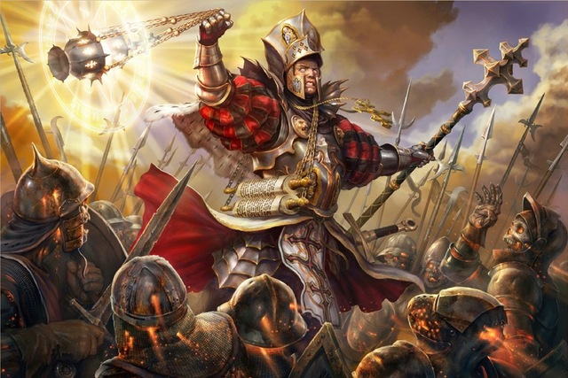
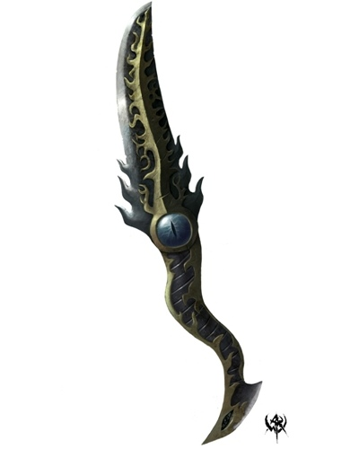
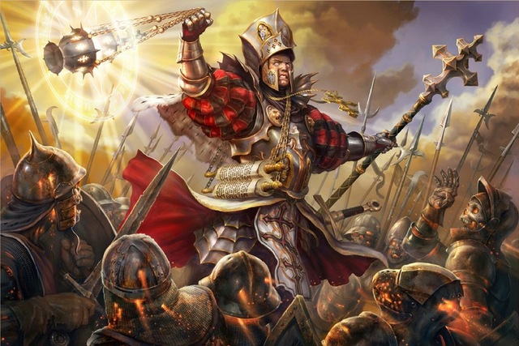
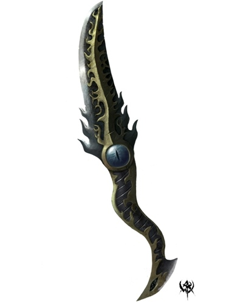

Choose your weapon
Lands ravaged by war between the two biggest factions in the country of Alba, the Paladins and the Cultists.

 Armies of good and evil marching from all corners for the world

You, a simple farmboy have somehow ended up in the midst of the battle, you are panicing, looking for something to defend yourself with.
you see something shining through the thick mud.
you decide to pick up what looks like a wepon and remove the mud and behold.
The wepon you pick up is:
1. A cultist dagger

2. A paladinian mace
Armies of good and evil marching from all corners for the world

You, a simple farmboy have somehow ended up in the midst of the battle, you are panicing, looking for something to defend yourself with.
you see something shining through the thick mud.
you decide to pick up what looks like a wepon and remove the mud and behold.
The wepon you pick up is:
1. A cultist dagger

2. A paladinian mace